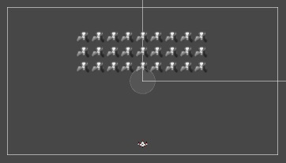
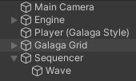
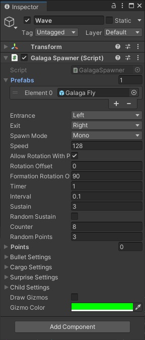
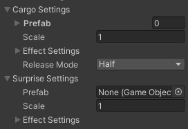
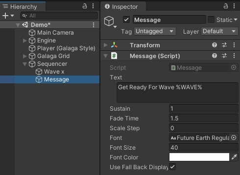
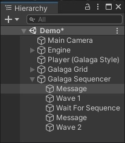

Galaga Essentials / Getting Started
Galaga Essentials can be found in the Assets/Playniax/Galaga Essentials folder.The demo scene can be found there also and can be used as a template or a new scene can be created and the Unity menu can be used to add the necessary GameObjects.
Prefabs
The Galaga Essentials comes with a set of prefabs.Prefabs can be found at Assets/Playniax/Galaga Essentials/Prefabs
They are categorized in backgrounds, enemies, players, etc and they have the necessary scripts attached.
IMPORTANT! In order for the prefabs to interact with eachother you must add the Engine prefab to your scene.
The engine prefab can be found at Assets/Playniax/Framework/Prototyping/Prefabs/Engine/Pyro
The engine handles the collisions, sounds and visual effects.
Setup
To setup a Galaga game you can do the following:1. Create a new 2d scene.
2. Add a player sprite to your scene.
3. Add a galaga formation grid to your scene.
4. Add a Galaga spawner to your scene.
1. Create a new 2d scene
We assume you know how to create a new scene in Unity.2. Add a player sprite to your scene
To add a player sprite to your scene you have atleast 2 options:1. Drag the prefab to your scene.
2. Use the Unity menu and select Playniax > Galaga Essentials > Sprites > Players > Player (Galaga Style).
3. Add a galaga formation grid to your scene
To add a galaga formation grid to your scene you have atleast 2 options:1. Drag the prefab to your scene.
2. Use the Unity menu and select Playniax > Galaga Essentials > Misc > Galala Grid.
The formation grid as seen from the Scene view:

4. Add a Galaga spawner to your scene
Use the Unity menu and select Playniax > Galaga Essentials > Sequencer > Galaga Spawner to add a spawner to your scene.Now the hierarchy should look something like this:

The sequencer explained
The sequencer executes the supported scripts on a GameObject (that is a child of the sequencer) in order they appear in the Hierarchy from top to bottom.Select the Wave in the sequencer:

The inspector should show the spawner settings:

Prefabs are the actual sprites to be spawned.
There are 9 enemy prefabs to choose from and they can be found in Assets/Playniax/Galaga Essentials/Prefabs/Enemies.
You can set more than one prefab and the spawner will choose one randomly.
The Entrance and Exit settings determine where the sprites enter and leave the screen.
The Spawning Mode setting determines if a single wave or double wave.
The Counter setting determines number of sprites are in a wave.
The Interval setting determines how much distance there is between each sprite in a wave.
The Cargo Settings and Surprise Settings can be used to leave an item or pickup (like for example a new weapon or coins) after the sprite of an attack wave is destroyed:

The available pickups can be found in Assets/Playniax/Framework/Prototyping/Prefabs/Players (Pickups)
Note that the prefabs used at Cargo Settings are released by all or half of the spawned sprites (depending on the release mode) and that the prefab used at Surprise Settings only by one of them.
Both Cargo Settings and Surprise Settings have an option called Effect Settings and is used to determine the direction of the released item to move.

The Bullets Settings determine if the sprite fire bullets or not:

Available bullet prefabs can be found in Assets/Playniax/Framework/Prototyping/Prefabs/Enemies (Bullets)
To add a new spawner simply duplicate one and change the settings or insert one using the Unity menu.
The Message command
It is possible to show messages between spawner operations.To add a message simply use the Unity menu and select Playniax > Galaga Essentials > Sequencer > Message.

By default a message will display the text Get Ready For Wave 1 where %WAVE% fetches the correct wave number.

You can determine how long the text is displayed by setting the sustain and fade time.
The sequencer moves on after the text was displayed.
The Wait command
Once a spawner is finished the sequencer continues with the next (if present).It is possible to create a delay or pause, in other words to have it wait until the previous spawner is done and the attack wave is destroyed.
It is possible to create a delay or pause between each sequencer operation.
If you don't add a delay or pause the sequencer will wait for the operation to be finished but not for all the spawnerd objects to be destroyed.
But first rename Wave to Wave 1 for easier reference.
Now add a wait command by using the Unity menu and select Playniax > Sequencer > Wait For Sequence To Be Finished
The sequencer should now wait until the last spawned objects are completly destroyed and move on to the next (if present).
For example:

This will first show a message, then Wave 1 will start but the sequencer will wait for Wave 1 to be destroyed.
After Wave 1 is destroyed a new message will be shown followed by Wave 2
You can repeat this as manny times as needed and make a cool game.
Just make sure all these GameObjects are (or stay) a child object of the sequencer.
Have a look at Sequencer for more information about the sequencer.
SHMUP Builder
We recently added a new tool called SHMUP Builder.SHMUP Builder can help you to create your own space shooter.
This tool is fairly easy to use and powerful enough for more experienced users.
Thanks to the included assets you can start right away to have fun!